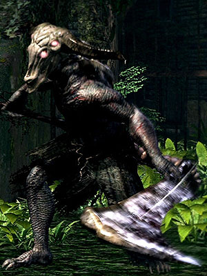

Ornstien and Smough
Dragonslayer Ornstein och Executioner Smough är enligt mig dom svåraste bossarna i Dark souls I. Ornstein och Smough är deras officiella namn men dom har många smeknamn tillexempel:
- Super Londo Bros
- Asterix och Obelix
- Atlas och P-Body
- Biggie Smalls
- Timon och Pumba
- Min personliga favorit är: KatjaKaj och BenteBent
Capra Demon
Capra Demon är egentligen en rätt lätt boss. Det som gör den svår att döda är området som bossen finns i. Det är ett väldigt begränsat område med lite plats för att undvika hans attacker. Tricket är att döda hundarna först.